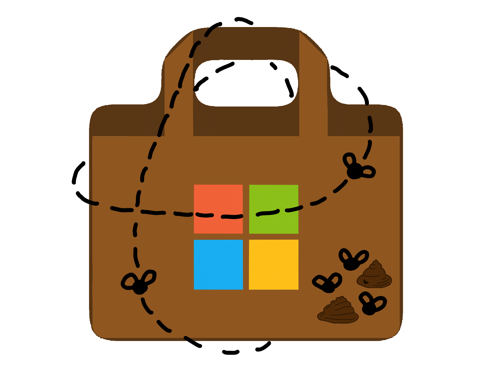

Project Archive
Click a project title to visit its repository. Each project is labelled by its focus and tools.
Hardware & Game Projects
A FOSS custom-designed calculator built from scratch for Fallout.
Context:
I hate how the Casio Calculators approved for exams here in Europe can't do symbolic calculus. It is one of the parts of math-related subjects which I find hardest, there are solvers online yet my calculator won't help.
This led me through a rabbit whole on clone calculators, my first idea was basically cloning the FX991-SP II Iberia with matrix display and all. After researching and reading, I started shifting into a "design-from-scratch" approach, where I develop a device with an e-ink display too.
This is my first hardware project that is not in "soldering-what-some-guy-told-me" territory, although obviously I did read and apply knowledge from existing schematics.

Throughout my work on this device, I have journaled my work regularly, as such, my progress and thought process can be seen here.
Context:
First hackathon project!!
I visited Shenzhen thanks to Hack Club.
We used an ESP32-S3 N16R8 as a web server and as the core for our shotgun with heads-up display, using Android phones as decks that read NFC items to make a real-life equivalent to the game "Buckshot Roulette".

Security Research
Context:
x86 devices vulnerable to the Spectre exploit are still in use in current times. This exploit being older unfortunately does not make it non-existant, and it is still quite easy to implement a very silent and potentially dangerous program that takes advantage of it.
Here is a little project that showcases a simplified text editor being cracked by a Spectre-v2 exploit on a modern Linux kernel.
Special thanks to Jesús Ferreira Rodríguez as he greatly helped me understand the volatile assembly required to build this.
Software Demos
A Java desktop client for finding and downloading UWP app packages on older or restricted Windows installations.
Context:
Older IoT and "bloat-free" versions of Windows have no support for the Windows Store. This is a simple replacement.
Using JavaFX and text files, I retrieve links from RG-Adguard and serve them like app downloads.
My first GUI done with no AI, perhaps it is quirky but I really dig the look.
